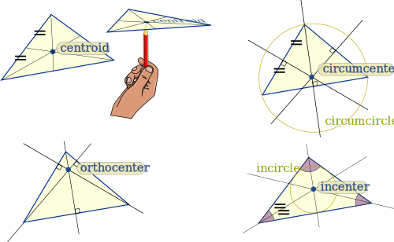
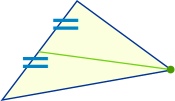
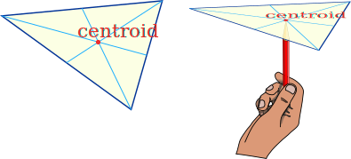
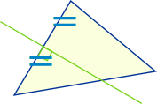
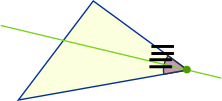
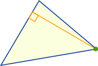

Triangle Centers
Where is the center of a triangle?
There are actually thousands of centers!
Here are the 4 most popular ones:

Centroid, Circumcenter, Incenter and Orthocenter
For each of those, the "center" is where special lines cross, so it all depends on those lines!
Let's look at each one:
Centroid
|  |
Draw a line (called a "median") from each corner to the midpoint of the opposite side. |
Try this: cut a triangle from cardboard, draw the medians. Do they all meet at one point? Can you balance the triangle at that point?

Circumcenter
|  | Draw a line (called a "perpendicular bisector") at right angles to the midpoint of each side. Where all three lines intersect is the center of a triangle's "circumcircle", called the "circumcenter": |
Try this: drag the points above until you get a right triangle (just by eye is OK). Where is the circumcenter? Why?
Incenter
|  | Draw a line (called the "angle bisector") from a corner so that it splits the angle in half Where all three lines intersect is the center of a triangle's "incircle", called the "incenter": |
Try this: find the incenter of a triangle using a compass and straightedge at: Inscribe a Circle in a Triangle
Orthocenter
|  | Draw a line segment (called the "altitude") at right angles to a side that goes to the opposite corner. Where all three lines intersect is the "orthocenter": |
Note that sometimes the edges of the triangle have to be extended outside the triangle to draw the altitudes. Then the orthocenter is also outside the triangle.